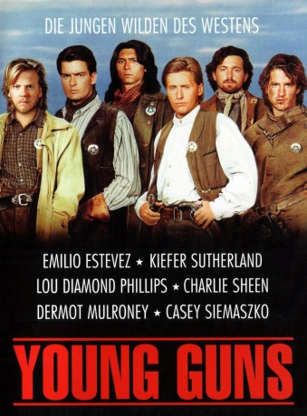
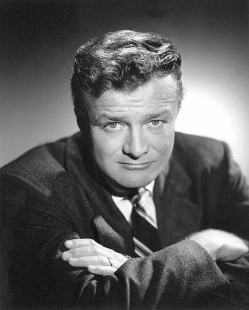

#5082 Young Guns - Sie fürchten weder Tod noch Teufel
Alternativ: Young Guns
 
 IMDB-Wertung: 6.8 / 10
IMDB-Wertung: 6.8 / 10  Metascore: 0
Metascore: 0 
Um seine Farm zu schützen stellt der englische Farmer John Tunstall in New Mexico eine handvoll junger Männer an, die aber nicht nur für ihn arbeiten sondern auch Lesen und schreiben lernen Sollen. Eines Tages wird Tunstall von Männern seines Nachbarn ermordet, aber der zuständige Sheriff zeigt kein Interesse, den Fall aufzuklären, denn auch er wird vom Nachbarn geschmiert. Daher bleibt den “Young Guns” nichts anderes übrig, als die Sache selbst in die Hand zu nehmen. Ein guter Freund des Ermordeten, ein Anwalt, schafft es, die sechs jungen Männer zu Hilfssheriffs zu machen, doch als solche haben sie auch gewisse Regeln einzuhalten, und nachdem einer von ihnen einen Gegner erschießt statt ihn festzunehmen, stehen plötzlich sie selbst ganz oben auf der Fahndungsliste.
Jahr: 1988
Dauer: 107 Minuten
FSK: 16
Land: USA Studio: 20th Century FoxTonspuren: DTS - ,
Untertitel:
Auflösung: 1080p (1920x1080) Größe: 11980 MB
Genre: Action, Thriller, Drama, Krimi, Western
Regisseur: Christopher Cain
Drehbuch: Frank O'Rourke
Soundtrack:
Darsteller:
 Emilio Estevez als William H. 'Billy the Kid' Bonney
Emilio Estevez als William H. 'Billy the Kid' Bonney Kiefer Sutherland als Josiah Gordon 'Doc' Scurlock
Kiefer Sutherland als Josiah Gordon 'Doc' Scurlock Lou Diamond Phillips als 'Jose' Chavez y Chavez
Lou Diamond Phillips als 'Jose' Chavez y Chavez Charlie Sheen als Richard 'Dick' Brewer
Charlie Sheen als Richard 'Dick' Brewer Dermot Mulroney als Dirty Steve Stephens
Dermot Mulroney als Dirty Steve Stephens Casey Siemaszko als Charles 'Charley' Bowdre
Casey Siemaszko als Charles 'Charley' Bowdre Terence Stamp als John Tunstall
Terence Stamp als John Tunstall Jack Palance als Lawrence G. Murphy
Jack Palance als Lawrence G. Murphy- Terry O'Quinn als Alex McSween
 Geoffrey Blake als J. McCloskey
Geoffrey Blake als J. McCloskey- Alice Carter als Yen Sun
-  Brian Keith als Buckshot Roberts
- Thomas Callaway als Texas Joe Grant
 Patrick Wayne als Patrick Floyd 'Pat' Garrett
Patrick Wayne als Patrick Floyd 'Pat' Garrett Lisa Banes als Mallory
Lisa Banes als Mallory- Victor Izay als Justice Wilson
 Danny Kamin als Sheriff Brady
Danny Kamin als Sheriff Brady- Sharon Thomas Cain als Susan McSween
- Sam Gauny als Morton
- Cody Palance als Baker
- Gadeek als Henry Hill
- Allen Keller als John Kinney
- Craig Erickson als Sheriff George Peppin
- Jeremy Lepard als Jimmy Dolan
- Richela Renkun als Bargirl
- Pat Finn-Lee als Janey
- Gary Kanin als Colonel Nathan Dudley
- Forrest Broadley als Rynerson
- Alan Tobin als Bartender
- Joey Hamlin als Deputy Hindman
- Loyd Lee Brown als Soldier
- Elena Parres als Manuela's Mother
- Tomas Moore als Town person , uncredited
- Lee Sollenberger als Regulator at Dance , uncredited
Datei: X:\HD-Western-Collections\Young Guns\Young Guns - Sie fürchten weder Tod noch Teufel (1988, FSK16, 1920x1080).mkv seit 23.12.2016
Festplatte: HD Eastern+Western
 Alle Filme aus Gruppe 'HD-Western-Collections\Young Guns'
Alle Filme aus Gruppe 'HD-Western-Collections\Young Guns'
- Young Guns - Sie fürchten weder Tod noch Teufel (der aktuelle Film)
- Young Guns II